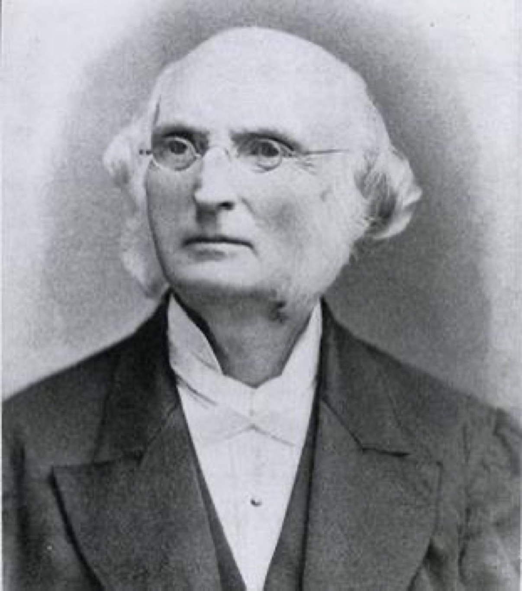
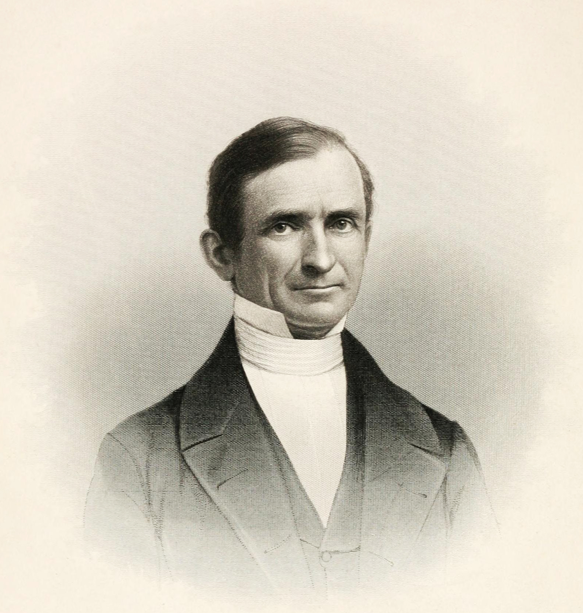
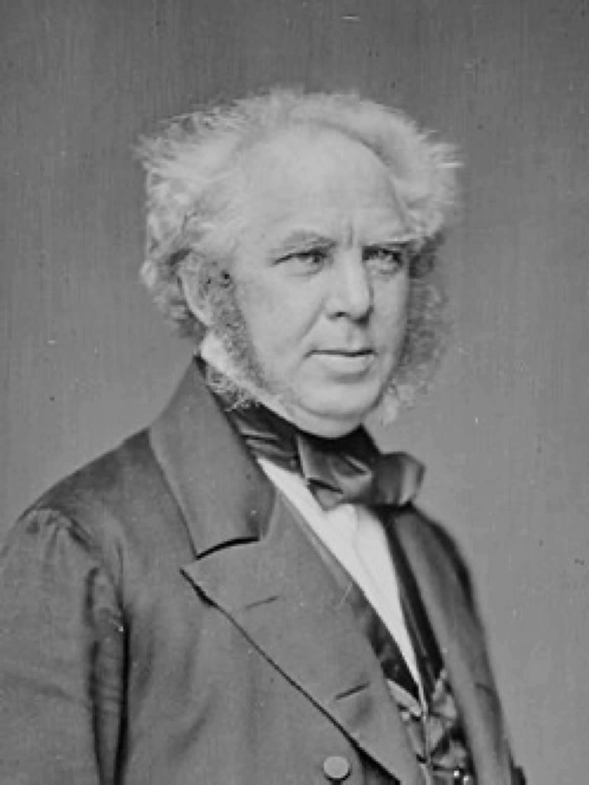
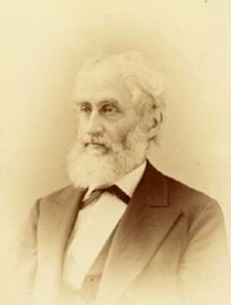
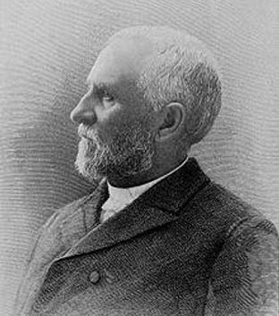
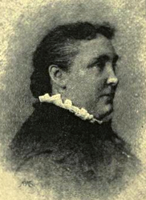
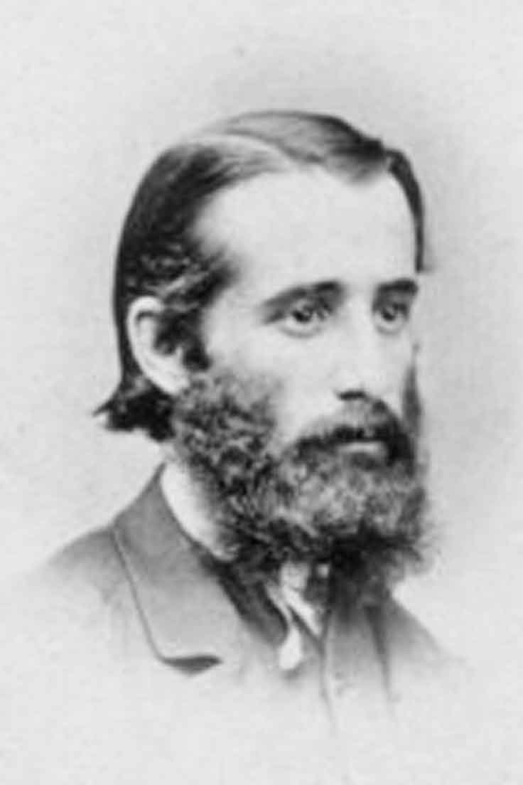
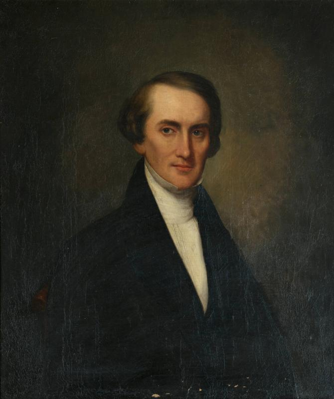
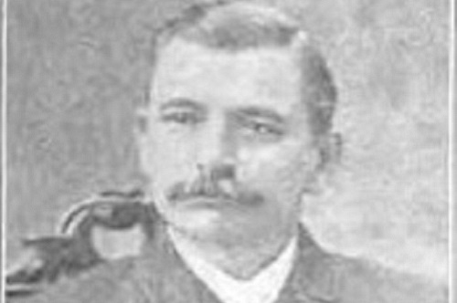
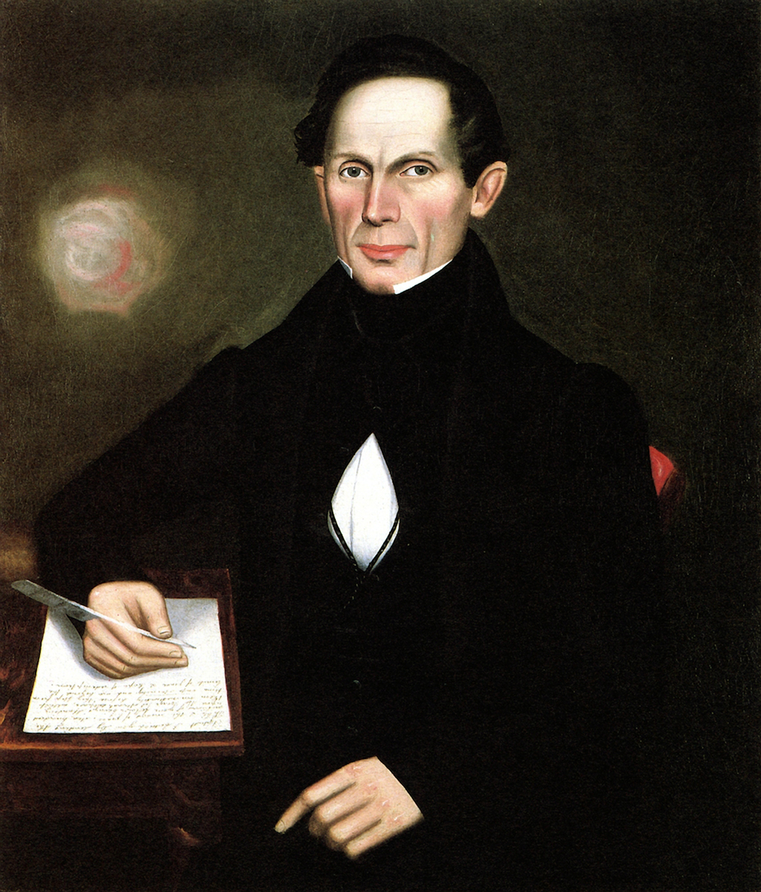

歷史長廊 · The Carers' Gallery
從 New England 到中華大地
十九世紀，一批從新英格蘭、紐約上州、新澤西出發的宣教士，把福音與關懷帶到了中國。
他們的見證，至今仍在對我們說話——關懷，從來不是一句口號，而是一生的同行。
排頭 · 從 East Windsor 出發的人

Samuel Robbins Brown（1810–1880）
布朗 Samuel Robbins Brown
1810–1880 · 康涅狄格州 East Windsor
1810 年，布朗生於康州 East Windsor——正是今天 South Windsor 隔壁的小鎮。1832 年耶魯畢業，入協和神學院首屆；1838 年，他以教師身份隨馬禮遜教育會前往廣州，主持中國第一所更正教學校馬禮遜學校。
1847 年，他帶著三名學生——容闳、黃勝、黃寬——橫渡太平洋赴美求學。1854 年，容闳從耶魯畢業，成為第一位畢業於美國大學的中國學生，中國留學事業自此開端。
1859 年起，他在日本二十年：辦學、培育一代日本領袖，並主持日文新約聖經翻譯，協助創立日本亞洲學會。
兩個世紀前，他從 East Windsor 出發，把關懷帶給中國與日本的年輕人；
今天，金燈台事工在隔壁的 South Windsor，接續同樣的使命——訓練「人人都是關懷者」，也為關懷者建造歸回的家。
四位先驅
與布朗同一時代、從新英格蘭出發的關懷者，他們的足跡遍佈廣州、上海、香港。

裨治文
Elijah Coleman Bridgman · 1801–1861 · 麻州 Belchertown
首位赴華的美國更正教宣教士。創辦《中國叢報》——世界第一份重要漢學期刊，被譽為美國漢學奠基人。

裨愛利
Eliza Jane Gillett Bridgman · 1805–1871 · 康州 Derby
創辦上海第一所更正教女子學校；守寡後重返北京，創辦貝滿女塾——燕京大學女子學院的前身。

伯駕
Peter Parker · 1804–1888 · 麻州 Framingham
中國第一位全職醫療宣教士。1835 年在廣州開設眼科醫局（博濟醫院），「以柳葉刀尖為福音開路」。
布朗
Samuel Robbins Brown · 1810–1880 · 康州 East Windsor
中國第一所更正教學校校長；帶容闳等三少年赴美；日本二十年，翻譯日文新約。本長廊排頭人物。
十三位關懷先賢名錄
從十九世紀到二十世紀中葉，他們從 New England、紐約上州、新澤西出發，把一生獻給了中國。

衛三畏
著《中國總論》《漢英韻府》，定義一代西方人對中國的認識；1877 年成為耶魯首任中文教授——美國第一個漢學講席。

倪維思
在山東提出「三自」教會方法——自傳、自養、自立；這套在中國孕育的方法，在韓國結出最豐碩的果實。

菲爾德
在汕頭開辦聖經婦女學校、編纂潮州話詞典、倡導廢除纏足；返美後成為美國婦女參政運動領袖。

明恩溥
《中國人的性格》作者；在華 54 年，曾說服羅斯福總統退還部分庚子賠款，催生庚款獎學金與清華大學。
瑪高溫
最早的美國浸信會醫療宣教士之一，1841 年起在寧波、上海行醫傳道；晚年重返中國，卒於上海。（肖像未尋獲，以名章代之）

雅裨理
1842 年在廈門開創歸正會宣教站；在廈門助徐繼畲編成《瀛寰志略》——十九世紀中國最有影響力的世界地理著作。

步惠廉
福州宣教士；1868 年把宗派刊物改造為跨宗派《教務雜誌》（Chinese Recorder），成為研究在華宣教最重要的文獻。

波乃耶
1838 年受美部會差派，足跡遍及新加坡、澳門、香港、廣州，在華南服事近三十年。
盧公明
福州宣教士；《中國社會生活》作者，以細膩筆觸記錄十九世紀中國民間社會，傳世至今。（肖像未尋獲，以名章代之）
他們把福音帶到中華大地；
今天，輪到我們把關懷傳下去。
「你們各人的重擔要互相擔當，如此，就完全了基督的律法。」 加拉太書 6 : 2